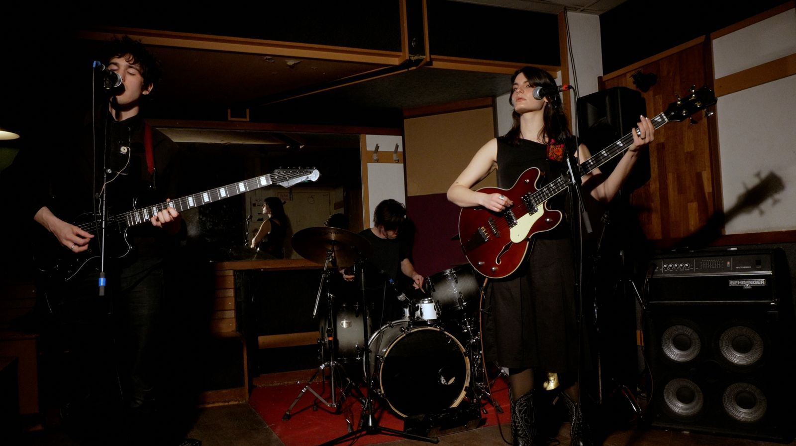

samuel dvorin, hugo berthier, josie arthur
paris, fr
we, from the shadows -- the phantom blue is an incantation -- a trio of guided by the hand of
we breathe -- hypnotic rites of minimalism -- built upon skeletal, long-form architectures that breathe and bleed into the room.
this dark sprawl -- evolves through a primal sense and
a haunting stillness, born from a wordless collective intuition.
we are the deep electric well -- the traces of ancient repetition -- the trio weaves a tapestry -- dense and ghostly.
we, outward find -- a world where a single, whispered musical gesture can -- gradually mutating until it -- consumes -- the air as a landscape—
a monument of sound and shadow.